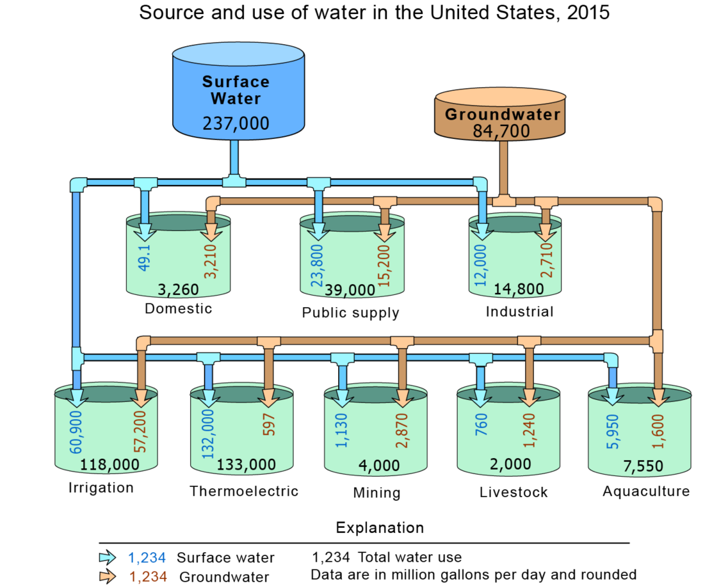

Water use in the United States in 2015 was estimated to be about 322 billion gallons per day (Bgal/d), which was 9 percent less than in 2010. The 2015 estimates put total withdrawals at the lowest level since before 1970, following the same overall trend of decreasing total withdrawals observed from 2005 to 2010. Freshwater withdrawals were 281 Bgal/d, or 87 percent of total withdrawals, and saline-water withdrawals were 41.0 Bgal/d, or 13 percent of total withdrawals. Fresh surface-water withdrawals (198 Bgal/d) were 14 percent less than in 2010, and fresh groundwater withdrawals (82.3 Bgal/day) were about 8 percent greater than in 2010. Saline surface-water withdrawals were 38.6 Bgal/d, or 14 percent less than in 2010. Total saline groundwater withdrawals in 2015 were 2.34 Bgal/d, mostly for mining use.
The top row of cylinders represents where America's freshwater came from (source) in 2015, either from surface water (blue) or from groundwater (brown). You can see most of the water we use came from surface-water sources, such as rivers and lakes. About 26 percent of water used came from groundwater. The pipes leading out of the surface-water and groundwater cylinders on the top row and flowing into the bottom rows of cylinders (green) show the categories of water use where the water was sent after being withdrawn from a river, lake, reservoir, or well.For example, the blue pipe coming out of the surface-water cylinder and entering the public supply cylinder shows that 23,800 Mgal/d of water was withdrawn from surface-water sources for public-supply uses (you probably get your water this way). Likewise, the brown pipe shows that public-suppliers withdrew another 15,200 Mgal/d of water from groundwater sources.Each green cylinder represents a category of water use. The industrial cylinder, for instance, shows how much groundwater, surface water, and total water was used inthe United States, each day, by industries.